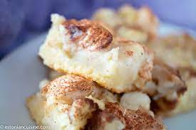

Estonian Quark and Rhubarb Pie

A traditional Estonain dessert made of quark and rhubarb
In Estonia we call these types of cakes and pies “Pidusai” which means “party bread”. A festive and beautiful bread for the holidays!
Ingredients
- 1 dl milk
- 10 g yeast
- 1 tablespoon sugar
- 1 small egg
- 25 g butter
- 1/2 teaspoon salt
- 2 teaspoon cardamom
- 3 dl flour
- 200 g sweet quark
- 1 glass of sliced rhubarb sugar
- cinnamon
Step by step directions
- All materials must be in room temperature
- Dissolve yeast with lukewarm (37C) milk and sugar
- Add about half of the quantity of flour, mixed with salt
- Beat the mixture for a short time. Sprinkle with a little flour , cover the bowl with a towel and place in a warm place to rise for ca 1 hour
- Add additional flour, cardamom
- add melted butter. Beat egg and leave ca 1 teaspoon for spreading.Add other beaten egg in to the dough
- Knead the dough properly, until it separates from the bowl.
- Sprinkle with a little flour , cover the bowl with a towel and place in a warm place to rise for ca 1 hour until dough is doubled in size.
- Roll the dough to a square and put in centre quark. Turn edges on to the quark and roll again carefully to a rectangle. Pour on to the rectangle rhubarb, sugar and cinnamon. leave one edge ca 2 cm empty. Roll and cut in to the equal slices. You should get ca 6-7 rolls. Empty edge turn under the roll as bottom. Put roll in to the butter-spreaded springform pan, as flower. one roll in to the centre and others around. Let enough space to rise
- Coat buns with beaten egg before putting into the oven. Bate at 180C 20-30 minutes. Decorate with icing sugar. Head isu!